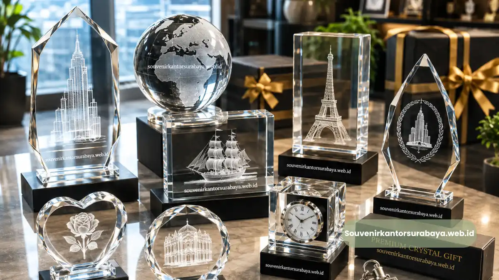
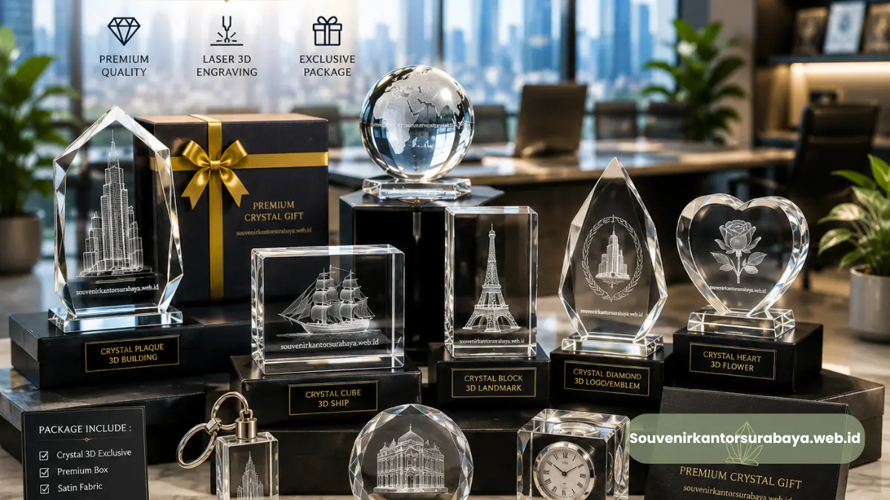

Jenis Plakat Kristal 3D Penghargaan Kantor Surabaya yang Paling Diminati.
Jenis Plakat Kristal 3D Penghargaan Kantor Surabaya yang Paling Diminati
Jenis plakat kristal 3D penghargaan kantor yang paling diminati di Surabaya meliputi bentuk balok klasik, trophy meruncing, gelombang melengkung, dan bentuk custom mengikuti logo perusahaan, masing-masing memberi kesan berbeda sesuai jenis acara.
- Bentuk balok klasik cocok untuk kesan formal dan korporat.
- Bentuk trophy dan melengkung lebih menonjolkan pencapaian individu.
- Bentuk custom logo memberi identitas visual khas perusahaan.
- Setiap jenis dapat dikombinasikan dengan ukiran foto atau teks penghargaan.
- Pemilihan jenis sebaiknya disesuaikan dengan tema dan tujuan acara penghargaan.
Plakat Kristal 3D Bentuk Balok Klasik
Bentuk balok persegi merupakan jenis plakat kristal 3D yang paling umum dipilih perusahaan di Surabaya karena tampilannya yang formal dan mudah dipadukan dengan berbagai gaya desain.
Permukaan datar pada bentuk ini memberi ruang yang luas untuk menampilkan logo perusahaan, teks penghargaan, maupun foto penerima secara proporsional.
Karena kesederhanaan bentuknya, plakat balok klasik umumnya cocok digunakan untuk penghargaan formal seperti apresiasi masa kerja, penghargaan kinerja tahunan, hingga cendera mata resmi untuk tamu instansi.
Bentuk ini juga relatif fleksibel untuk berbagai ukuran, mulai dari ukuran kecil untuk meja kerja hingga ukuran besar untuk dipajang di ruang penghargaan kantor.
Kapan Bentuk Balok Klasik Paling Sesuai Digunakan?
Bentuk balok klasik paling sesuai digunakan pada acara-acara resmi yang mengutamakan kesan profesional, seperti rapat tahunan pemegang saham, seremoni penghargaan instansi pemerintah, atau penghargaan purna tugas karyawan senior.
Baca Juga
Plakat Kristal 3D Bentuk Trophy dan Melengkung
Berbeda dengan bentuk balok, plakat kristal 3D bentuk trophy atau melengkung dirancang untuk menonjolkan kesan dinamis dan prestisius.
Bentuk ini sering dipilih untuk penghargaan yang berfokus pada pencapaian individu, seperti penghargaan karyawan terbaik bulanan, penghargaan sales terbaik, atau penghargaan inovasi kerja.
Lekukan pada bentuk trophy memantulkan cahaya dari berbagai sudut, sehingga menciptakan efek visual yang lebih hidup dibanding bentuk datar.
Karakter ini membuat penerima penghargaan merasa mendapatkan apresiasi yang lebih personal dan berkesan.
Apakah Bentuk Trophy Cocok untuk Acara Formal Instansi?
Bentuk trophy tetap dapat digunakan pada acara formal instansi selama desain teks dan logonya disesuaikan dengan nuansa profesional, misalnya menggunakan kombinasi warna netral dan tipografi yang rapi.
Plakat Kristal 3D Custom Mengikuti Logo Perusahaan
Selain bentuk standar, banyak perusahaan di Surabaya memilih plakat kristal 3D dengan bentuk custom yang mengikuti siluet logo atau identitas visual perusahaan.
Jenis ini memberikan kesan eksklusif karena bentuknya yang unik dan tidak dimiliki perusahaan lain.
Pembuatan bentuk custom umumnya memerlukan proses desain tambahan untuk memastikan siluet logo dapat diaplikasikan secara presisi ke dalam material kristal.
Meski begitu, hasil akhirnya sering dianggap lebih merepresentasikan identitas dan nilai perusahaan dibanding bentuk standar.

Plakat kristal 3D premium yang dirancang khusus untuk penghargaan kantor Anda.
Kombinasi Ukiran Foto dan Teks pada Setiap Jenis Plakat
Setiap jenis bentuk plakat kristal 3D di atas dapat dikombinasikan dengan berbagai elemen desain, mulai dari ukiran foto penerima penghargaan, logo perusahaan, hingga teks apresiasi yang personal.
Kombinasi ini memungkinkan satu jenis bentuk plakat digunakan untuk berbagai kebutuhan acara, mulai dari penghargaan individu hingga penghargaan kolektif tim.
Secara umum, tren pemesanan plakat kristal 3D dengan elemen foto personal cenderung meningkat sepanjang 2024-2025, seiring makin banyak perusahaan yang ingin memberikan kesan penghargaan yang lebih personal kepada karyawan maupun mitra bisnis.
Ukuran Plakat Kristal 3D yang Umum Tersedia
Selain bentuk, ukuran plakat kristal 3D juga menjadi pertimbangan penting dalam menentukan jenis yang sesuai dengan kebutuhan acara.
Ukuran kecil hingga sedang umumnya dipilih untuk penghargaan individu yang akan disimpan di meja kerja penerima, sementara ukuran besar lebih sering digunakan untuk plakat pajangan di ruang penghargaan atau lobi kantor.
Pemilihan ukuran juga berkaitan dengan jumlah elemen desain yang ingin ditampilkan. Semakin banyak elemen seperti logo, foto, dan teks panjang yang ingin dicantumkan, umumnya semakin besar pula ukuran kristal yang direkomendasikan agar seluruh detail tetap terlihat jelas dan proporsional.
Bagaimana Menentukan Ukuran yang Tepat untuk Setiap Acara?
Menentukan ukuran yang tepat umumnya bergantung pada tujuan penggunaan plakat, apakah untuk disimpan pribadi oleh penerima atau dipajang secara permanen di area kantor.
Acara penghargaan individu biasanya cukup menggunakan ukuran sedang, sementara plakat untuk milestone perusahaan atau apresiasi mitra bisnis sering menggunakan ukuran yang lebih besar agar kesan seremonialnya lebih terasa.
Kombinasi Warna dan Pencahayaan pada Plakat Kristal 3D
Warna dasar kristal yang digunakan, baik bening transparan maupun dengan sentuhan warna tertentu pada dudukan atau lampu LED, turut memengaruhi kesan akhir dari setiap jenis plakat.
Beberapa perusahaan memilih dudukan kristal dengan lampu LED agar efek ukiran tiga dimensi semakin terlihat jelas, terutama saat dipajang di ruangan dengan pencahayaan minim.
Kombinasi warna dan pencahayaan ini dapat disesuaikan dengan identitas visual perusahaan, misalnya menggunakan warna dudukan yang senada dengan warna korporat, sehingga tampilan plakat kristal 3D semakin selaras dengan citra perusahaan secara keseluruhan.
Kesimpulan
Setiap jenis plakat kristal 3D, baik bentuk balok klasik, trophy, melengkung, maupun custom logo, memiliki karakter penyampaian pesan yang berbeda sesuai tujuan acara penghargaan.
Memahami karakter masing-masing jenis, ukuran, hingga kombinasi warna dapat membantu perusahaan menghadirkan penghargaan yang lebih bermakna bagi penerimanya.
Tertarik memesan plakat kristal 3D dengan jenis dan desain yang sesuai kebutuhan acara penghargaan kantor Anda? Kunjungi souvenirkantorsurabaya.web.id sekarang untuk berkonsultasi mengenai bentuk, ukuran, dan desain custom terbaik untuk perusahaan Anda.

Hawa Nadira
Tim penulis CorporateGifts ID berfokus pada strategi souvenir kantor, merchandise korporat, dan inovasi brand untuk klien B2B.
Keahlian: Branding perusahaan, produksi souvenir, paket event, desain materi promosi.
Artikel Terkait

Panduan Memilih Seminar Kit Premium
Ringkasan panduan memilih seminar kit premium yang tepat untuk acara dan kebutuhan branding perusahaan.
Baca Selengkapnya
Merchandise Perusahaan untuk Promosi Bisnis
Ide merchandise korporat yang efektif untuk meningkatkan visibilitas brand dan impresi profesional.
Baca Selengkapnya
Ide Souvenir Kantor
Pilihan souvenir kantor dengan sentuhan branding yang membuat acara perusahaan semakin berkesan.
Baca Selengkapnya